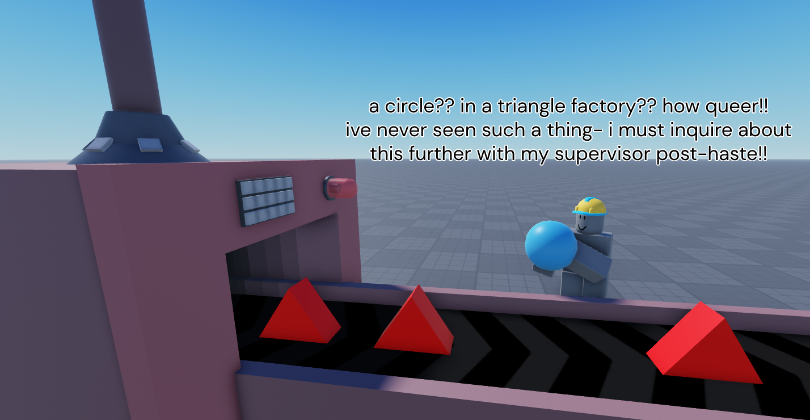

I'm a professional fullstack Lua/Luau scripter with over 2 years of experience.
I would like to explicitly point out my vast experience in backend; Profilestores, Vector math, CFrame math - All of that I can handle without any issues.
Below you can view my previous works that involved scripting. Most of them are solo projects, and some of them never made a public release.
For projects that did release, a link to the experience will be provided.
Exhibit A: Voxel Wave Simulation (demo)
This is a demo of a simple wave simulation made with voxels.
Initially this project was supposed to be a normal wave simulation, but at the time,
Roblox's Editable Mesh APIs were still in beta, and I couldn't apply them.
Scripts in this place make extensive use of Parallel Luau (multithreading), which drastically improved performance and allowed for larger grid scales.
Exhibit B (1): Cube Rancher
Exhibit B (2):
This project is inspired by Slime Rancher (a Monomi Park game) and was supposed to be sort of a port of it in Roblox.
Video (1) is the newer version, a rewrite of sorts.
Video (2) is an older version with more mechanics and overall content.
Exhibit C: Triangle Factory Tycoon

(video unavailable)
A simple tycoon game I made in 2 or 3 days, based around the triangle factory worker meme.
Abandoned, but playable enough so I released it as a demo.
This game was made purely as proof to myself that making tycoon games is easy. It really is.
Exhibit D: Stick Over It
This is my second game.
This project was made as an attempt to make my own version of Getting Over It with Bennett Foddy in Roblox.
A lot of inspiration for this was also taken from ball and axe, an already existing roblox adaptation of that game.
Exhibit E: Just a Bossfight Game
While it wasn't in development for long, a lot of backend stuff was actually finished on the project:
A functioning data structure, lobbies, fights, win/loss/stalemate system, end of match rating, inventory, ui animations, attack patterns, rewards, weapon types,
weapons themselves, damage mechanic, parties, a leveling system, shop, an admin menu and many more was done.